Contents
function t_wvfPlot
% % Illustrate ways to create plots of the wvf structure using the wvfPlot call. % % NOTE: Should improve and demonstrate/explain control over sampling % resolutions. % % (BW) Wavefront Toolbox Team, 2014-15
Clear and close
close all; ieInit;
Set up wfv object
wvf = wvfCreate; wave = 550; wvf = wvfSet(wvf,'calc wave',wave); % There is a bit of an art to setting the number % of samples, because of reciprocal relation between % sampling in pupil and retinal domains. This choice % is an OK compromise, but you can get finer results % with additional fussing wvf = wvfSet(wvf,'spatial samples',401); % Compute the PSF wvf = wvfComputePSF(wvf);
Make the plot in microns
unit = 'um'; [u,p]= wvfPlot(wvf,'1d psf space',unit,wave); set(p,'color','k','linewidth',2) title([num2str(wave) ' nm']); % Normalize the plot unit = 'um'; [u,p]= wvfPlot(wvf,'1d psf space normalized',unit,wave); set(p,'color','b','linewidth',2) title([num2str(wave) ' nm']); % Make the plot distance axis millimeters unit = 'mm'; [u,p]= wvfPlot(wvf,'1d psf space normalized',unit,wave); set(p,'color','r','linewidth',3,'linestyle',':') title([num2str(wave) ' nm']);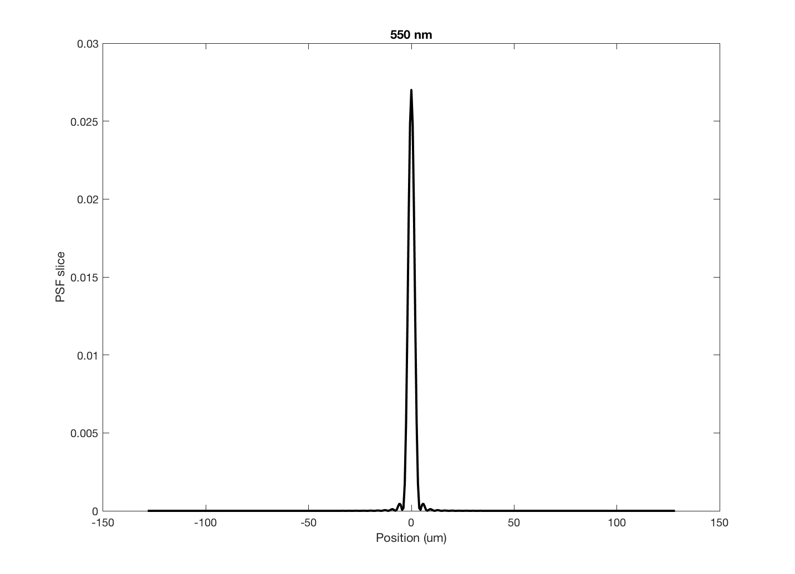 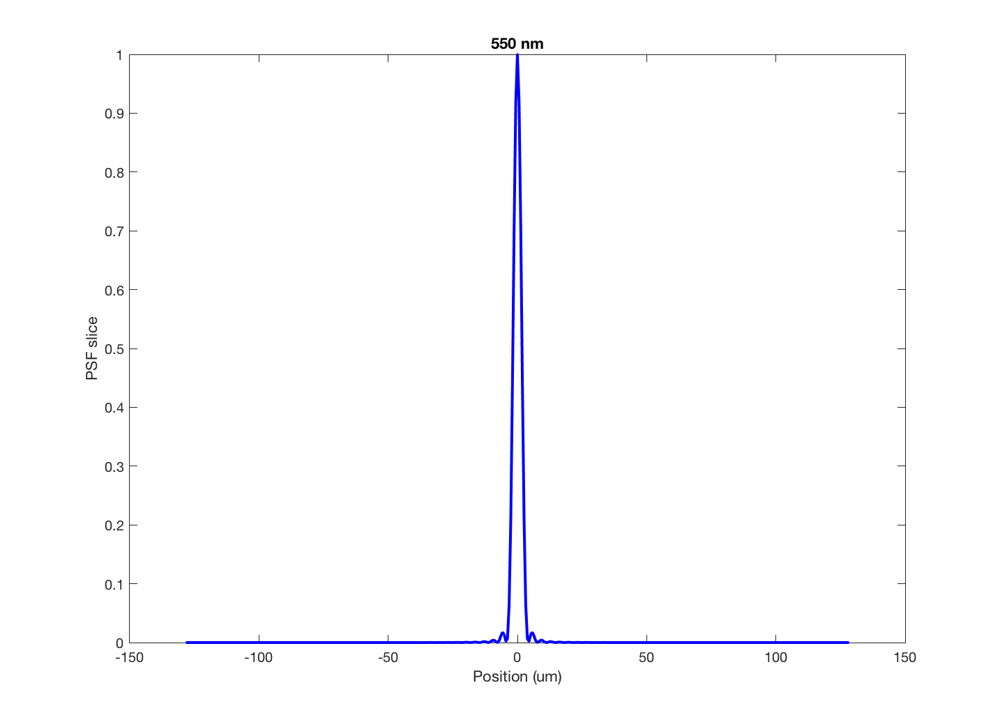 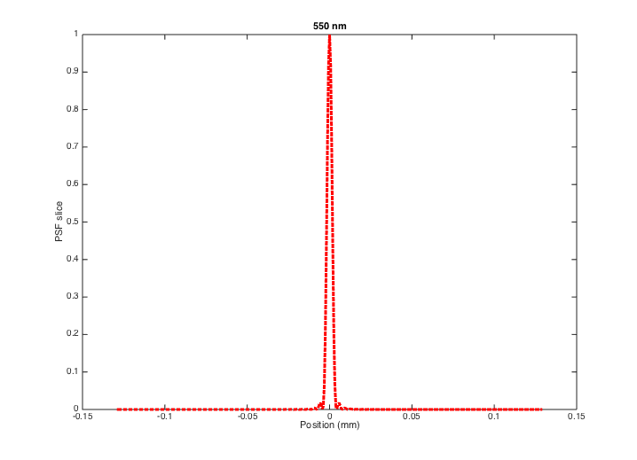
Show the return arguments
Data values that were plotted.
u
% Figure properties that can be set.
get(p)
u =
x: [1x401 double]
y: [1x401 double]
AlignVertexCenters: 'off'
Annotation: [1x1 matlab.graphics.eventdata.Annotation]
BeingDeleted: 'off'
BusyAction: 'queue'
ButtonDownFcn: ''
Children: [0x0 GraphicsPlaceholder]
Clipping: 'on'
Color: [1 0 0]
CreateFcn: ''
DeleteFcn: ''
DisplayName: ''
HandleVisibility: 'on'
HitTest: 'on'
Interruptible: 'on'
LineJoin: 'round'
LineStyle: ':'
LineWidth: 3
Marker: 'none'
MarkerEdgeColor: 'auto'
MarkerFaceColor: 'none'
MarkerSize: 6
Parent: [1x1 Axes]
PickableParts: 'visible'
Selected: 'off'
SelectionHighlight: 'on'
Tag: ''
Type: 'line'
UIContextMenu: [0x0 GraphicsPlaceholder]
UserData: []
Visible: 'on'
XData: [1x401 double]
XDataMode: 'manual'
XDataSource: ''
YData: [1x401 double]
YDataSource: ''
ZData: [1x0 double]
ZDataSource: ''
A multiple axis window
vcNewGraphWin([],'tall'); subplot(3,1,1), wvfPlot(wvf,'1d psf space',unit,wave,'no window'); title([num2str(wave) ' nm']); subplot(3,1,2), wvfPlot(wvf,'1d psf space normalized',unit,wave,'no window'); subplot(3,1,3), wvfPlot(wvf,'image psf','um',wave,20,'no window');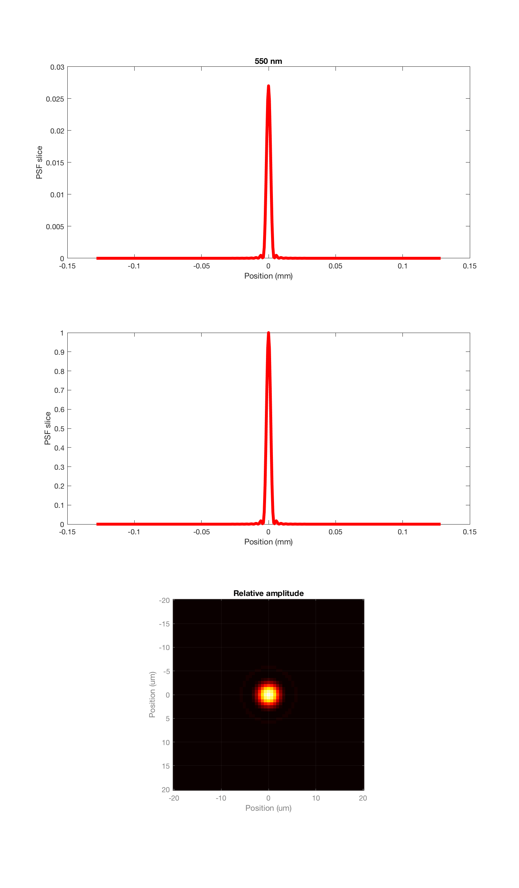
Pupil amplitude and phase
unit = 'mm'; maxMM = 2; wvfPlot(wvf,'image pupil amp',unit,wave,maxMM); title(['Pupil function amplitude ' num2str(wave) ' nm']); wvfPlot(wvf,'image pupil phase',unit,wave,maxMM); title(['Pupil function phase ' num2str(wave) ' nm']);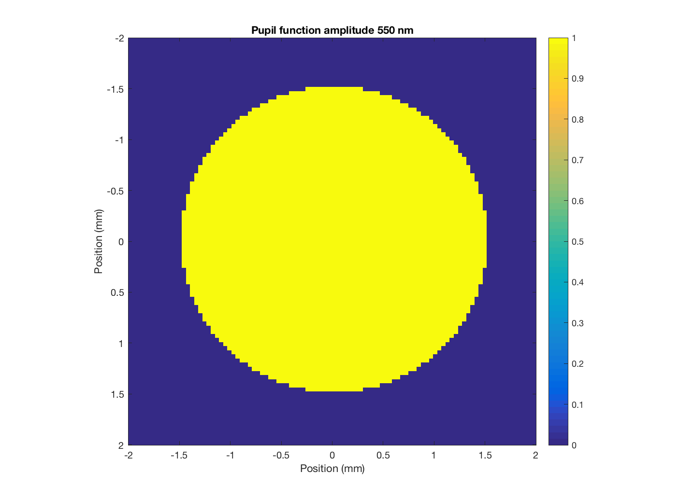 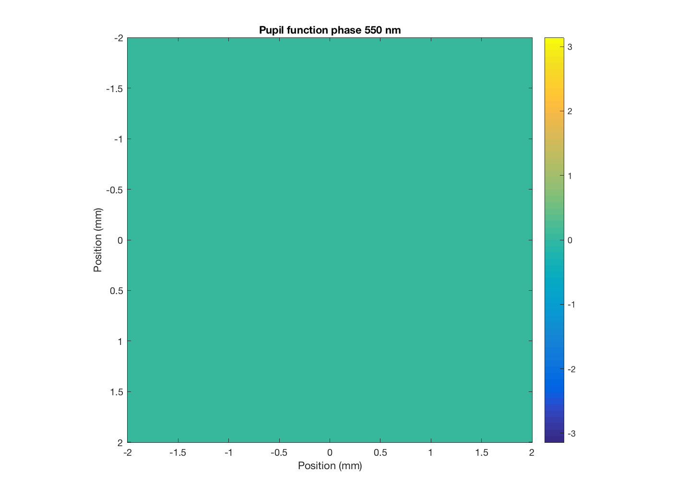
Mesh plots of the psf in angle and space
unit = 'min'; maxMIN = 10; wvfPlot(wvf,'2d psf angle',unit,wave,maxMIN); title([num2str(wave) ' nm']); unit = 'mm'; maxMM = .050; wvfPlot(wvf,'2d psf space',unit,wave,maxMM); title([num2str(wave) ' nm']); % These are linepairs / unit and maximum frequency unit = 'mm'; maxF = 300; wvfPlot(wvf,'2d otf',unit,wave,maxF);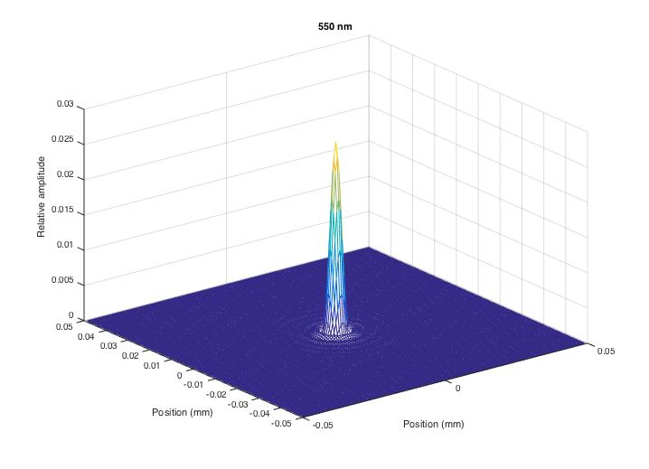 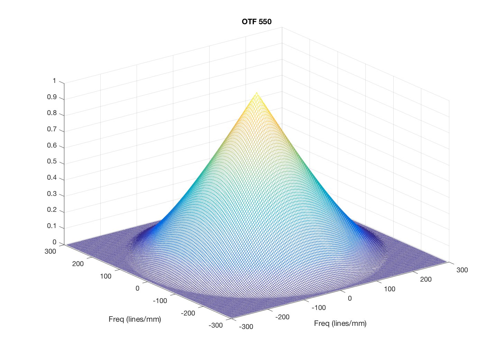
Change the calculated PSF wavelength and plot again
Notice that we don't get an Airy disk, because the calculation includes chromatic aberrations. These show up in the optical phase plot in the pupil plane.
Another way to say this is that the pupil function is specified at a measurement wavelength, and when we calculate at different wavelengths a model of defocus is applied according to a model of the human eye's chromatic aberrations.
wave = 460; wvf = wvfSet(wvf,'calc wave',wave); wvf = wvfComputePSF(wvf); unit = 'min'; wvfPlot(wvf,'image psf angle',unit,wave); title(['Relative amplitude ' num2str(wave) ' nm']); % A multiple axis window vcNewGraphWin([],'tall'); subplot(3,1,1), wvfPlot(wvf,'1d psf space',unit,wave,'no window'); title([num2str(wave) ' nm']); subplot(3,1,2), wvfPlot(wvf,'1d psf space normalized',unit,wave,'no window'); subplot(3,1,3), wvfPlot(wvf,'image psf','um',wave,20,'no window'); % Pupil amplitude and phase unit = 'mm'; maxMM = 2; wvfPlot(wvf,'image pupil amp',unit,wave,maxMM); title(['Pupil function amplitude ' num2str(wave) ' nm']); wvfPlot(wvf,'image pupil phase',unit,wave,maxMM); title(['Pupil function phase ' num2str(wave) ' nm']);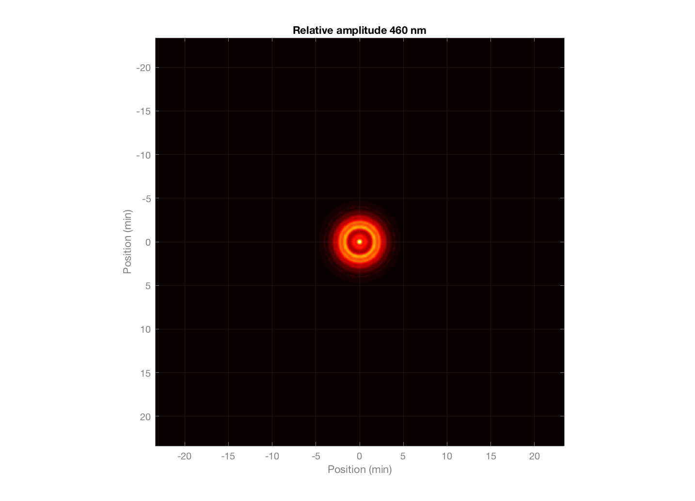 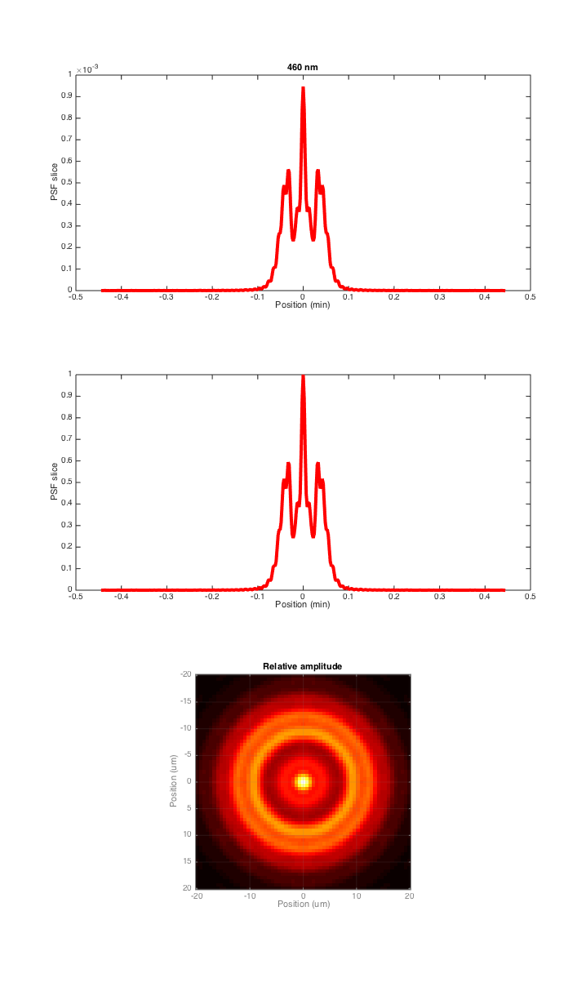 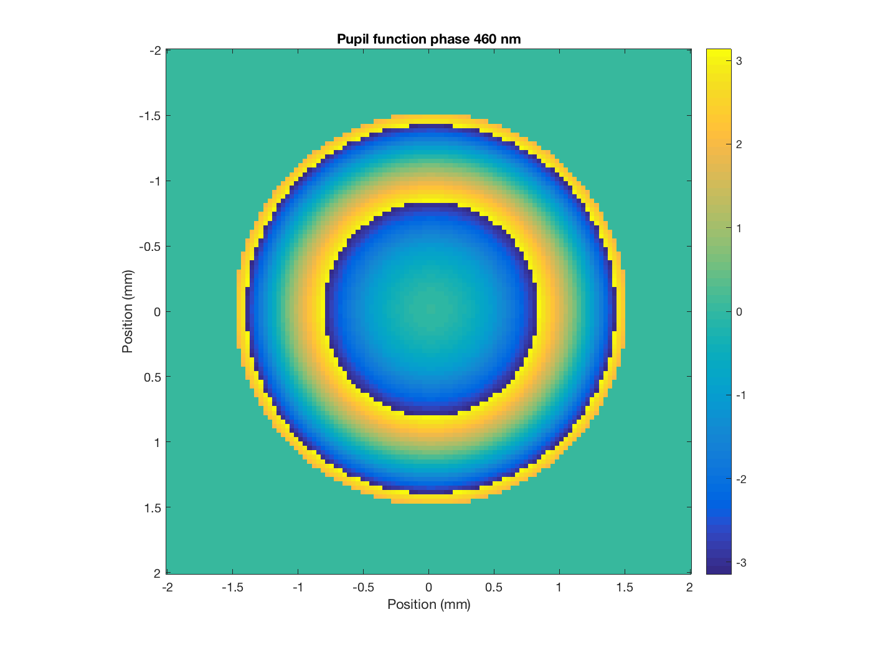
end